library(COTAN)
library(data.table)
library(Matrix)
library(ggrepel)
#> Loading required package: ggplot2
# library(latex2exp)mycolours <- c(A = "#8491B4B2", B = "#E64B35FF")
my_theme = theme(axis.text.x = element_text(size = 14,
angle = 0, hjust = 0.5, vjust = 0.5,
face = "plain", colour = "#3C5488FF"),
axis.text.y = element_text(size = 14,
angle = 0, hjust = 0, vjust = 0.5,
face = "plain", colour = "#3C5488FF"),
axis.title.x = element_text(size = 14,
angle = 0, hjust = 0.5, vjust = 0,
face = "plain", colour = "#3C5488FF"),
axis.title.y = element_text(size = 14,
angle = 90, hjust = 0.5, vjust = 0.5,
face = "plain", colour = "#3C5488FF"))data = as.data.frame(fread(paste(data_dir,
"GSM2861510_E115_Only_Cortical_Cells_DGE.txt.gz",
sep = "/")))
data = as.data.frame(data)
rownames(data) = data$V1
data = data[, 2:ncol(data)]
data[1:10, 1:10]
#> ATGTAGTACCGA TCAACTTCATAT ATGAAAGACCAT CCGTACCGCGTA ATCACCCGTGTT
#> 0610005C13Rik 0 0 0 0 0
#> 0610007N19Rik 0 0 0 0 3
#> 0610007P14Rik 0 0 2 2 1
#> 0610009B22Rik 2 0 0 2 0
#> 0610009D07Rik 4 6 5 5 3
#> 0610009E02Rik 0 0 0 0 0
#> 0610009L18Rik 0 0 1 1 0
#> 0610009O20Rik 0 2 0 0 0
#> 0610010F05Rik 0 0 2 0 1
#> 0610010K14Rik 0 0 0 0 0
#> ATCTCCGCACGT CCCTTCTCCTAC AATCAGTTGCTT AGTAAAGGACTT CTGCGCTTACCT
#> 0610005C13Rik 0 0 0 0 0
#> 0610007N19Rik 0 1 2 0 0
#> 0610007P14Rik 2 0 3 1 0
#> 0610009B22Rik 1 0 1 0 1
#> 0610009D07Rik 1 4 2 5 7
#> 0610009E02Rik 0 1 0 0 0
#> 0610009L18Rik 0 1 0 0 0
#> 0610009O20Rik 0 1 0 1 0
#> 0610010F05Rik 5 1 1 0 0
#> 0610010K14Rik 0 0 0 0 0Define a directory where the ouput will be stored.
Initialize the COTAN object with the row count table and the metadata for the experiment.
obj = new("scCOTAN", raw = data)
obj = initRaw(obj, GEO = "GSM2861510", sc.method = "DropSeq",
cond = "mouse cortex E11.5")
#> [1] "Initializing S4 object"Now we can start the cleaning. Analysis requires and starts from a matrix of raw UMI counts after removing possible cell doublets or multiplets and low quality or dying cells (with too high mtRNA percentage, easily done with Seurat or other tools).
If we do not want to consider the mitochondrial genes we can remove them before starting the analysis.
genes_to_rem = rownames(obj@raw[grep("^mt",
rownames(obj@raw)), ]) #genes to remove : mithocondrial
obj@raw = obj@raw[!rownames(obj@raw) %in%
genes_to_rem, ]
cells_to_rem = colnames(obj@raw[which(colSums(obj@raw) ==
0)])
obj@raw = obj@raw[, !colnames(obj@raw) %in%
cells_to_rem]We want also to define a prefix to identify the sample.
t = "E11_cortex_clean"
print(paste("Condition ", t, sep = ""))
#> [1] "Condition E11_cortex_clean"
#--------------------------------------
n_cells = length(colnames(obj@raw))
print(paste("n cells", n_cells, sep = " "))
#> [1] "n cells 1418"
n_it = 1
# obj@raw = obj@raw[rownames(cells),
# colnames(cells)]First, we create the directory to store all information regarding the data cleaning.
if (!file.exists(out_dir)) {
dir.create(file.path(out_dir))
}
if (!file.exists(paste(out_dir, "cleaning",
sep = ""))) {
dir.create(file.path(out_dir, "cleaning"))
}ttm = clean(obj)
#> [1] "Start estimation mu with linear method"
#> [1] 12549 1418
#> rowname CAGAGCTTTACG GCCCCTCACGAT CGGCAACTATCA GGCGGAGGCGTA
#> 5167 Hbb-y 174.578095 340.178647 224.552985 329.057856
#> 5163 Hba-x 112.695946 117.536808 129.919941 171.739359
#> 5162 Hba-a1 44.776514 149.181333 65.761945 60.305424
#> 5164 Hbb-bh1 57.354187 24.863556 48.118497 73.415299
#> 5354 Hnrnpa2b1 8.049710 19.212747 14.435549 11.798887
#> 5417 Hsp90ab1 13.583886 14.692101 9.623699 7.865925
#> 5166 Hbb-bt 1.509321 13.561939 6.415800 19.664812
#> 4081 Fth1 9.559031 13.561939 6.415800 10.487900
#> 6294 Malat1 3.521748 10.171455 12.831599 3.932962
#> 682 Actb 5.031069 2.260323 8.019749 11.798887
#> 9342 Rps9 11.571459 9.041293 4.811850 3.932962
#> 11448 Tubb5 6.037283 3.390485 6.415800 5.243950
#> 9223 Rpl13a 9.559031 7.911131 4.811850 3.932962
#> 9251 Rpl32 9.055924 11.301616 3.207900 11.798887
#> 11990 Ybx1 10.565245 10.171455 4.811850 2.621975
#> TGTTAGCGCGGA ATGGATCTCATT
#> 5167 131.348618 509.114655
#> 5163 76.043937 295.226249
#> 5162 93.326650 96.400408
#> 5164 3.456543 156.650663
#> 5354 6.913085 0.000000
#> 5417 3.456543 9.037538
#> 5166 13.826170 3.012513
#> 4081 3.456543 12.050051
#> 6294 13.826170 6.025025
#> 682 10.369628 12.050051
#> 9342 10.369628 6.025025
#> 11448 17.282713 6.025025
#> 9223 6.913085 9.037538
#> 9251 3.456543 3.012513
#> 11990 10.369628 3.012513
obj = ttm$object
ttm$pca.cell.2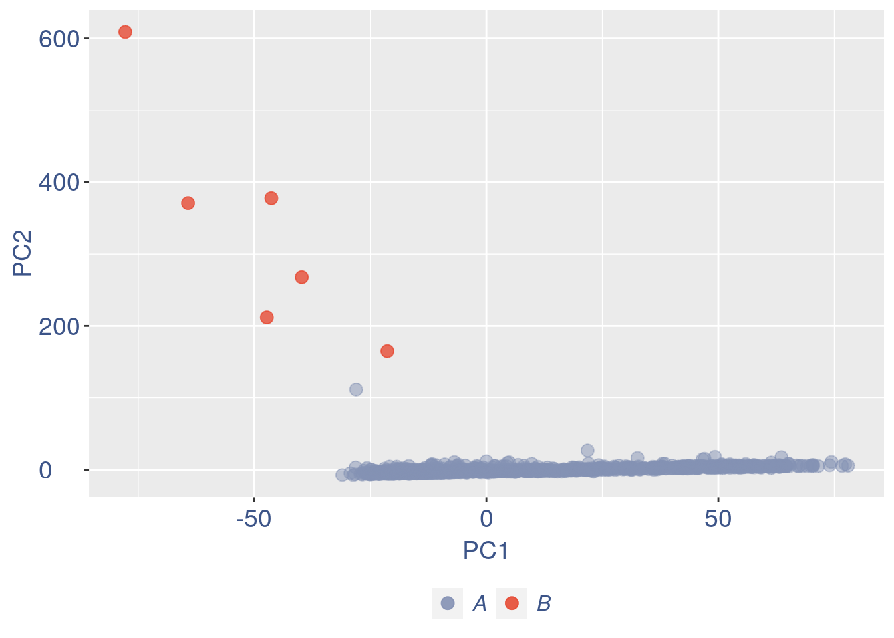
Run this when B cells need to be removed.
pdf(paste(out_dir, "cleaning/", t, "_", n_it,
"_plots_before_cells_exlusion.pdf", sep = ""))
ttm$pca.cell.2
ggplot(ttm$D, aes(x = n, y = means)) + geom_point() +
geom_text_repel(data = subset(ttm$D,
n > (max(ttm$D$n) - 15)), aes(n,
means, label = rownames(ttm$D[ttm$D$n >
(max(ttm$D$n) - 15), ])), nudge_y = 0.05,
nudge_x = 0.05, direction = "x",
angle = 90, vjust = 0, segment.size = 0.2) +
ggtitle("B cell group genes mean expression") +
my_theme + theme(plot.title = element_text(color = "#3C5488FF",
size = 20, face = "italic", vjust = -5,
hjust = 0.02))
dev.off()
#> png
#> 2
if (length(ttm$cl1) < length(ttm$cl2)) {
to_rem = ttm$cl1
} else {
to_rem = ttm$cl2
}
n_it = n_it + 1
obj@raw = obj@raw[, !colnames(obj@raw) %in%
to_rem]
# obj@raw = obj@raw[rownames(obj@raw)
# %in% rownames(cells),colnames(obj@raw)
# %in% colnames(cells)]
gc()
#> used (Mb) gc trigger (Mb) max used (Mb)
#> Ncells 3734773 199.5 6027515 322.0 6027515 322.0
#> Vcells 120442987 919.0 206449142 1575.1 171973003 1312.1
ttm = clean(obj)
#> [1] "Start estimation mu with linear method"
#> [1] 12543 1412
#> rowname GCATATTACGCC TGAGAGCGAAGG
#> 6291 Malat1 278.591783 350.707493
#> 7296 Nnat 49.370696 11.888390
#> 6513 Meg3 3.526478 53.497753
#> 1353 Atrx 10.579435 23.776779
#> 11430 Tuba1a 28.211826 5.944195
#> 11104 Tmsb10 28.211826 0.000000
#> 839 Akap9 0.000000 23.776779
#> 681 Actb 17.632391 5.944195
#> 6230 Luc7l3 3.526478 17.832584
#> 7618 Pa2g4 3.526478 17.832584
#> 5351 Hnrnpa2b1 21.158870 0.000000
#> 4122 G3bp2 7.052957 11.888390
#> 11945 Xist 7.052957 11.888390
#> 2313 Ckap4 0.000000 17.832584
#> 2380 Cmip 0.000000 17.832584
# ttm = clean.sqrt(obj, cells)
obj = ttm$object
ttm$pca.cell.2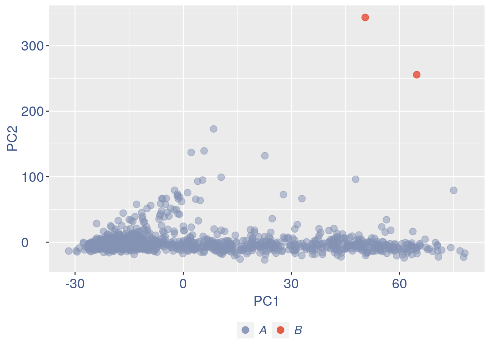
#> png
#> 2
#> used (Mb) gc trigger (Mb) max used (Mb)
#> Ncells 3734996 199.5 6027515 322.0 6027515 322.0
#> Vcells 123175645 939.8 297462764 2269.5 297462305 2269.5
#> [1] "Start estimation mu with linear method"
#> [1] 12539 1410
#> rowname GTAGCCAATCAA GCACACGCCTCA TCGATGCTCCGG CGGCTGTTCCGC TATATAAGTATC
#> 6289 Malat1 137.826998 139.765012 182.524171 96.726725 136.543974
#> 7293 Nnat 0.000000 0.000000 0.000000 73.967496 5.461759
#> 11942 Xist 13.338097 15.529446 0.000000 11.379615 10.923518
#> 11427 Tuba1a 4.446032 0.000000 0.000000 34.138844 10.923518
#> 11981 Ybx1 8.892064 7.764723 4.148277 11.379615 16.385277
#> 5646 Islr2 0.000000 0.000000 4.148277 28.449037 10.923518
#> 9335 Rps9 0.000000 11.647084 12.444830 5.689807 10.923518
#> 9692 Sfrs18 8.892064 23.294169 4.148277 0.000000 0.000000
#> 8624 Ptprs 0.000000 7.764723 0.000000 17.069422 10.923518
#> 10222 Son 8.892064 11.647084 4.148277 0.000000 10.923518
#> 11439 Tubb5 0.000000 7.764723 16.593106 0.000000 10.923518
#> 8895 Rbm25 13.338097 0.000000 4.148277 11.379615 5.461759
#> 9309 Rps26 0.000000 19.411807 8.296553 5.689807 0.000000
#> 1502 Baz1b 8.892064 7.764723 8.296553 5.689807 0.000000
#> 6510 Meg3 4.446032 0.000000 24.889660 0.000000 0.000000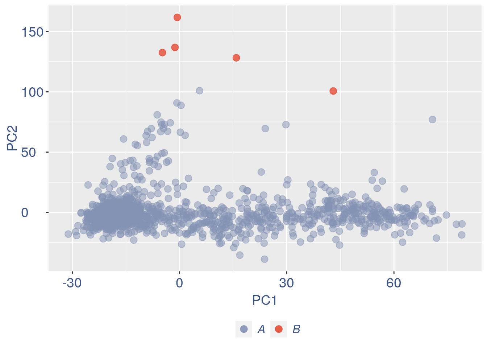
Run this only in the last iteration, instead the previous code, when B cells group has not to be removed.
pdf(paste(out_dir, "cleaning/", t, "_", n_it,
"_plots_before_cells_exlusion.pdf", sep = ""))
ttm$pca.cell.2
ggplot(ttm$D, aes(x = n, y = means)) + geom_point() +
geom_text_repel(data = subset(ttm$D,
n > (max(ttm$D$n) - 15)), aes(n,
means, label = rownames(ttm$D[ttm$D$n >
(max(ttm$D$n) - 15), ])), nudge_y = 0.05,
nudge_x = 0.05, direction = "x",
angle = 90, vjust = 0, segment.size = 0.2) +
ggtitle(label = "B cell group genes mean expression",
subtitle = " - B group NOT removed -") +
my_theme + theme(plot.title = element_text(color = "#3C5488FF",
size = 20, face = "italic", vjust = -10,
hjust = 0.02), plot.subtitle = element_text(color = "darkred",
vjust = -15, hjust = 0.01))
dev.off()
#> png
#> 2To color the pca based on nu_j (so the cells’ efficiency)
nu_est = round(obj@nu, digits = 7)
plot.nu <- ggplot(ttm$pca_cells, aes(x = PC1,
y = PC2, colour = log(nu_est)))
plot.nu = plot.nu + geom_point(size = 1,
alpha = 0.8) + scale_color_gradient2(low = "#E64B35B2",
mid = "#4DBBD5B2", high = "#3C5488B2",
midpoint = log(mean(nu_est)), name = "ln (nu)") +
ggtitle("Cells PCA coloured by cells efficiency") +
my_theme + theme(plot.title = element_text(color = "#3C5488FF",
size = 20), legend.title = element_text(color = "#3C5488FF",
size = 14, face = "italic"), legend.text = element_text(color = "#3C5488FF",
size = 11), legend.key.width = unit(2,
"mm"), legend.position = "right")
pdf(paste(out_dir, "cleaning/", t, "_plots_PCA_efficiency_colored.pdf",
sep = ""))
plot.nu
dev.off()
#> png
#> 2
plot.nu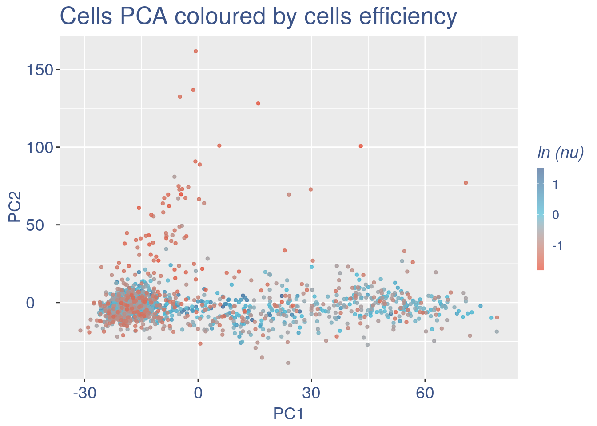
The next part is use to remove the cells with efficiency too low.
nu_df = data.frame(nu = sort(obj@nu), n = c(1:length(obj@nu)))
ggplot(nu_df, aes(x = n, y = nu)) + geom_point(colour = "#8491B4B2",
size = 1) + my_theme #+ ylim(0,1) + xlim(0,70)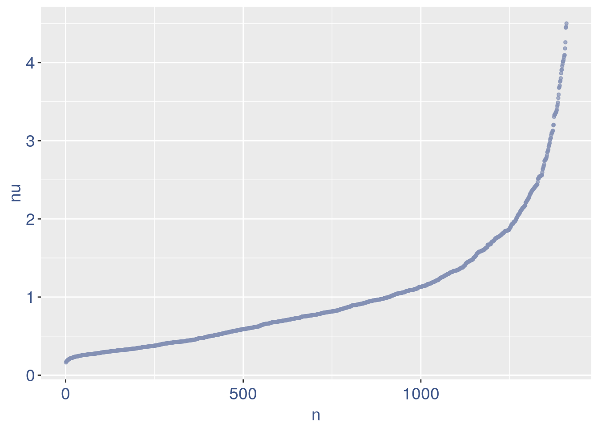
We can zoom on the smalest values and, if we detect a clear elbow, we can decide to remove the cells.
yset = 0.21 #threshold to remove low UDE cells
plot.ude <- ggplot(nu_df, aes(x = n, y = nu)) +
geom_point(colour = "#8491B4B2", size = 1) +
my_theme + ylim(0, 0.4) + xlim(0, 200) +
geom_hline(yintercept = yset, linetype = "dashed",
color = "darkred") + annotate(geom = "text",
x = 500, y = 0.5, label = paste("to remove cells with nu < ",
yset, sep = " "), color = "darkred",
size = 4.5)
pdf(paste(out_dir, "cleaning/", t, "_plots_efficiency.pdf",
sep = ""))
plot.ude
dev.off()
#> png
#> 2
plot.ude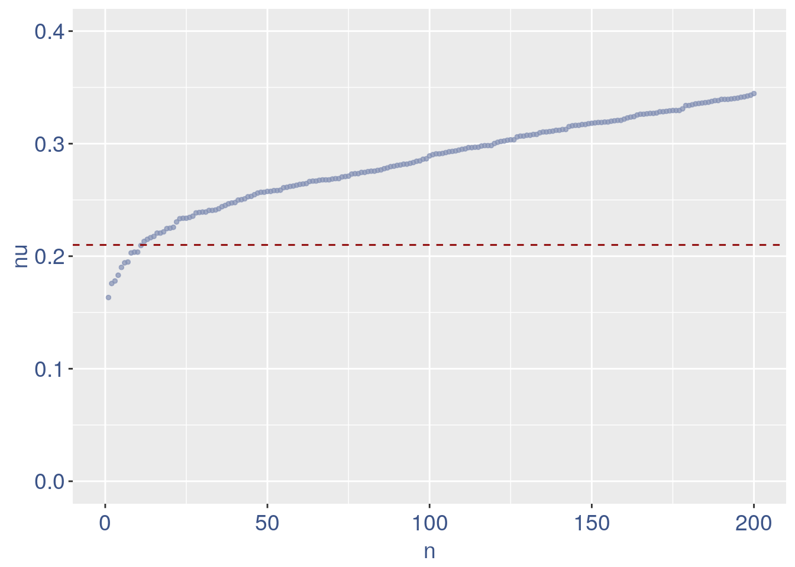
We also save the defined threshold in the metadata and re run the estimation
obj@meta[(nrow(obj@meta) + 1), 1:2] = c("Threshold low UDE cells:",
yset)
to_rem = rownames(nu_df[which(nu_df$nu <
yset), ])
obj@raw = obj@raw[, !colnames(obj@raw) %in%
to_rem]Repeat the estimation after the cells are removed
ttm = clean(obj)
#> [1] "Start estimation mu with linear method"
#> [1] 12537 1399
#> rowname TCCCTCTTATAC GTAGCCAATCAA GCACACGCCTCA TCGATGCTCCGG CCCATCCCGGGC
#> 6288 Malat1 98.595685 138.703643 140.653984 183.685111 103.892147
#> 11940 Xist 26.889732 13.422933 15.628220 0.000000 0.000000
#> 9691 Sfrs18 8.963244 8.948622 23.442331 4.174662 4.155686
#> 6227 Luc7l3 13.444866 13.422933 7.814110 4.174662 8.311372
#> 11979 Ybx1 0.000000 8.948622 7.814110 4.174662 20.778429
#> 9334 Rps9 4.481622 0.000000 11.721165 12.523985 12.467058
#> 10221 Son 13.444866 8.948622 11.721165 4.174662 0.000000
#> 9256 Rpl41 8.963244 0.000000 3.907055 16.698646 8.311372
#> 6509 Meg3 0.000000 4.474311 0.000000 25.047970 8.311372
#> 9633 Serbp1 13.444866 0.000000 11.721165 4.174662 8.311372
#> 681 Actb 13.444866 0.000000 0.000000 4.174662 16.622744
#> 7615 Pabpc1 8.963244 0.000000 7.814110 0.000000 16.622744
#> 10366 Srrm2 17.926488 4.474311 7.814110 0.000000 0.000000
#> 5559 Incenp 13.444866 8.948622 7.814110 0.000000 0.000000
#> 9215 Rpl13a 8.963244 4.474311 7.814110 4.174662 4.155686
obj = ttm$object
ttm$pca.cell.2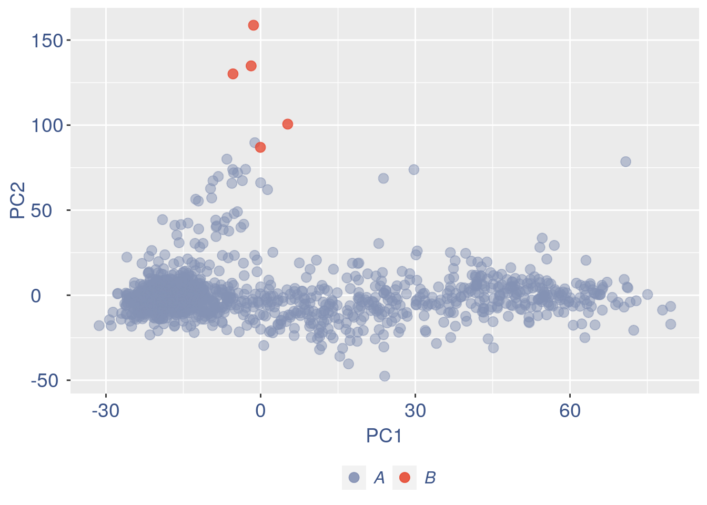
Just to check again, we plot the final efficiency colored PCA
nu_est = round(obj@nu, digits = 7)
plot.nu <- ggplot(ttm$pca_cells, aes(x = PC1,
y = PC2, colour = log(nu_est)))
plot.nu = plot.nu + geom_point(size = 2,
alpha = 0.8) + scale_color_gradient2(low = "#E64B35B2",
mid = "#4DBBD5B2", high = "#3C5488B2",
midpoint = log(mean(nu_est)), name = "ln(nu)") +
ggtitle("Cells PCA coloured by cells efficiency: last") +
my_theme + theme(plot.title = element_text(color = "#3C5488FF",
size = 20), legend.title = element_text(color = "#3C5488FF",
size = 14, face = "italic"), legend.text = element_text(color = "#3C5488FF",
size = 11), legend.key.width = unit(2,
"mm"), legend.position = "right")
pdf(paste(out_dir, "cleaning/", t, "_plots_PCA_efficiency_colored_FINAL.pdf",
sep = ""))
plot.nu
dev.off()
#> png
#> 2
plot.nu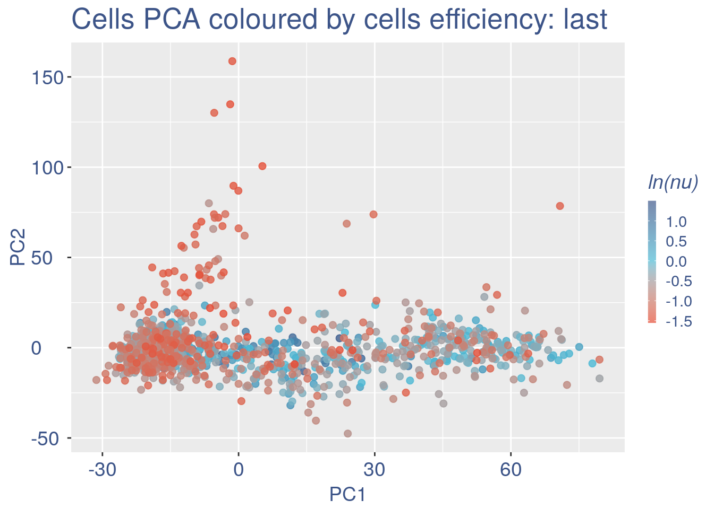
COTAN analysis: in this part all the contingency tables are computed and used to get the statistics (S). To storage efficiency of all the observed tables only the yes_yes is stored. Note that if will be necessary re-coputing the yes-yes table, the yes-yes table should be cancelled before running cotan_analysis.
COEX evaluation and storing
saveRDS(obj, file = paste(out_dir, t, ".cotan.RDS",
sep = ""))
obj = get.coex(obj)
# saving the structure
saveRDS(obj, file = paste(out_dir, t, ".cotan.RDS",
sep = ""))Automatic data elaboration (without cleaning)
obj2 = automatic.COTAN.object.creation(df = data,
GEO = "GSM2861510", sc.method = "Drop-seq",
cond = "E11_cortex", out_dir = "Data/")
#> [1] "Initializing S4 object"
#> [1] "Condition E11_cortex"
#> [1] "n cells 1418"
#> [1] "Start estimation mu with linear method"
#> [1] 12549 1418
#> rowname CAGAGCTTTACG GCCCCTCACGAT CGGCAACTATCA GGCGGAGGCGTA
#> 5167 Hbb-y 174.578095 340.178647 224.552985 329.057856
#> 5163 Hba-x 112.695946 117.536808 129.919941 171.739359
#> 5162 Hba-a1 44.776514 149.181333 65.761945 60.305424
#> 5164 Hbb-bh1 57.354187 24.863556 48.118497 73.415299
#> 5354 Hnrnpa2b1 8.049710 19.212747 14.435549 11.798887
#> 5417 Hsp90ab1 13.583886 14.692101 9.623699 7.865925
#> 5166 Hbb-bt 1.509321 13.561939 6.415800 19.664812
#> 4081 Fth1 9.559031 13.561939 6.415800 10.487900
#> 6294 Malat1 3.521748 10.171455 12.831599 3.932962
#> 682 Actb 5.031069 2.260323 8.019749 11.798887
#> 9342 Rps9 11.571459 9.041293 4.811850 3.932962
#> 11448 Tubb5 6.037283 3.390485 6.415800 5.243950
#> 9223 Rpl13a 9.559031 7.911131 4.811850 3.932962
#> 9251 Rpl32 9.055924 11.301616 3.207900 11.798887
#> 11990 Ybx1 10.565245 10.171455 4.811850 2.621975
#> TGTTAGCGCGGA ATGGATCTCATT
#> 5167 131.348618 509.114655
#> 5163 76.043937 295.226249
#> 5162 93.326650 96.400408
#> 5164 3.456543 156.650663
#> 5354 6.913085 0.000000
#> 5417 3.456543 9.037538
#> 5166 13.826170 3.012513
#> 4081 3.456543 12.050051
#> 6294 13.826170 6.025025
#> 682 10.369628 12.050051
#> 9342 10.369628 6.025025
#> 11448 17.282713 6.025025
#> 9223 6.913085 9.037538
#> 9251 3.456543 3.012513
#> 11990 10.369628 3.012513
#> [1] "Cotan analysis function started"
#> [1] "cotan analysis"
#> [1] "mu estimator creation"
#> [1] "save effective constitutive genes"
#> [1] "start a minimization"
#> [1] "Next gene: Capn2 number 1810"
#> [1] "Next gene: Fam83h number 3820"
#> [1] "Next gene: Kidins220 number 5830"
#> [1] "Next gene: Pds5a number 7840"
#> [1] "Next gene: Slc18b1 number 9850"
#> [1] "Next gene: Wdr26 number 11860"
#> [1] "Final trance!"
#> [1] "a min: -0.0564117431640625 | a max 371.625 | negative a %: 18.2962785879353"
#> [1] "Only analysis time 0.909146149953206"
#> [1] "Cotan coex estimation started"
#> [1] "coex dataframe creation"
#> [1] "Generating contingency tables for observed data"
#> [1] "creation of observed yes/yes contingency table"
#> [1] "mu estimator creation"
#> [1] "expected contingency tables creation"
#> [1] "The distance between estimated n of zeros and observed number of zero is 0.0593550958424397 over 12549"
#> [1] "Done"
#> [1] "coex estimation"
#> [1] "Diagonal coex values substituted with 0"
#> [1] "Total time 2.62279897928238"
#> [1] "Only coex time 1.57342616717021"
#> [1] "Saving elaborated data locally at Data/E11_cortex.cotan.RDS"In this case the test possible macroscopic differences between cleaned and not cleaned data.
The initial cell number was:
obj = readRDS(paste(out_dir, t, ".cotan.RDS",
sep = ""))
obj@meta
#> V1 V2
#> 1 GEO: GSM2861510
#> 2 scRNAseq method: DropSeq
#> 3 starting n. of cells: 1418
#> 4 Condition sample: mouse cortex E11.5
#> 5 Threshold low UDE cells: 0.21While the final number of cells was:
So were removed:
cells
quant.p = get.GDI(obj)
#> [1] "function to generate GDI dataframe"
#> [1] "Using S"
#> [1] "function to generate S "
head(quant.p)
#> sum.raw.norm GDI exp.cells
#> 0610007N19Rik 4.779046 1.511822 7.219442
#> 0610007P14Rik 5.747081 1.604336 19.370979
#> 0610009B22Rik 5.938677 1.327618 20.657613
#> 0610009D07Rik 7.334895 1.554625 56.683345
#> 0610009E02Rik 3.591232 1.314033 2.358828
#> 0610009L18Rik 4.115833 1.282979 3.359543In the third column of this data frame is reported the percentage of cells expressing the gene.
NPGs = c("Nes", "Vim", "Sox2", "Sox1", "Notch1",
"Hes1", "Hes5", "Pax6") #,'Hes3'
PNGs = c("Map2", "Tubb3", "Neurod1", "Nefm",
"Nefl", "Dcx", "Tbr1")
hk = c("Calm1", "Cox6b1", "Ppia", "Rpl18",
"Cox7c", "Erh", "H3f3a", "Taf1", "Taf2",
"Gapdh", "Actb", "Golph3", "Mtmr12",
"Zfr", "Sub1", "Tars", "Amacr")
text.size = 12
quant.p$highlight = with(quant.p, ifelse(rownames(quant.p) %in%
NPGs, "NPGs", ifelse(rownames(quant.p) %in%
hk, "Constitutive", ifelse(rownames(quant.p) %in%
PNGs, "PNGs", "normal"))))
textdf <- quant.p[rownames(quant.p) %in%
c(NPGs, hk, PNGs), ]
mycolours <- c(Constitutive = "#00A087FF",
NPGs = "#E64B35FF", PNGs = "#F39B7FFF",
normal = "#8491B4B2")
f1 = ggplot(subset(quant.p, highlight ==
"normal"), aes(x = sum.raw.norm, y = GDI)) +
geom_point(alpha = 0.1, color = "#8491B4B2",
size = 2.5)
GDI_plot = f1 + geom_point(data = subset(quant.p,
highlight != "normal"), aes(x = sum.raw.norm,
y = GDI, colour = highlight), size = 2.5,
alpha = 0.8) + geom_hline(yintercept = quantile(quant.p$GDI)[4],
linetype = "dashed", color = "darkblue") +
geom_hline(yintercept = quantile(quant.p$GDI)[3],
linetype = "dashed", color = "darkblue") +
geom_hline(yintercept = 1.5, linetype = "dotted",
color = "red", size = 0.5) + scale_color_manual("Status",
values = mycolours) + scale_fill_manual("Status",
values = mycolours) + xlab("log normalized counts") +
ylab("GDI") + geom_label_repel(data = textdf,
aes(x = sum.raw.norm, y = GDI, label = rownames(textdf),
fill = highlight), label.size = NA,
alpha = 0.5, direction = "both", na.rm = TRUE,
seed = 1234) + geom_label_repel(data = textdf,
aes(x = sum.raw.norm, y = GDI, label = rownames(textdf)),
label.size = NA, segment.color = "black",
segment.size = 0.5, direction = "both",
alpha = 0.8, na.rm = TRUE, fill = NA,
seed = 1234) + theme(axis.text.x = element_text(size = text.size,
angle = 0, hjust = 0.5, vjust = 0.5,
face = "plain", colour = "#3C5488FF"),
axis.text.y = element_text(size = text.size,
angle = 0, hjust = 0, vjust = 0.5,
face = "plain", colour = "#3C5488FF"),
axis.title.x = element_text(size = text.size,
angle = 0, hjust = 0.5, vjust = 0,
face = "plain", colour = "#3C5488FF"),
axis.title.y = element_text(size = text.size,
angle = 90, hjust = 0.5, vjust = 0.5,
face = "plain", colour = "#3C5488FF"),
legend.title = element_blank(), legend.text = element_text(color = "#3C5488FF",
face = "italic"), legend.position = "bottom") # titl)
legend <- cowplot::get_legend(GDI_plot)
GDI_plot = GDI_plot + theme(legend.position = "none")
GDI_plot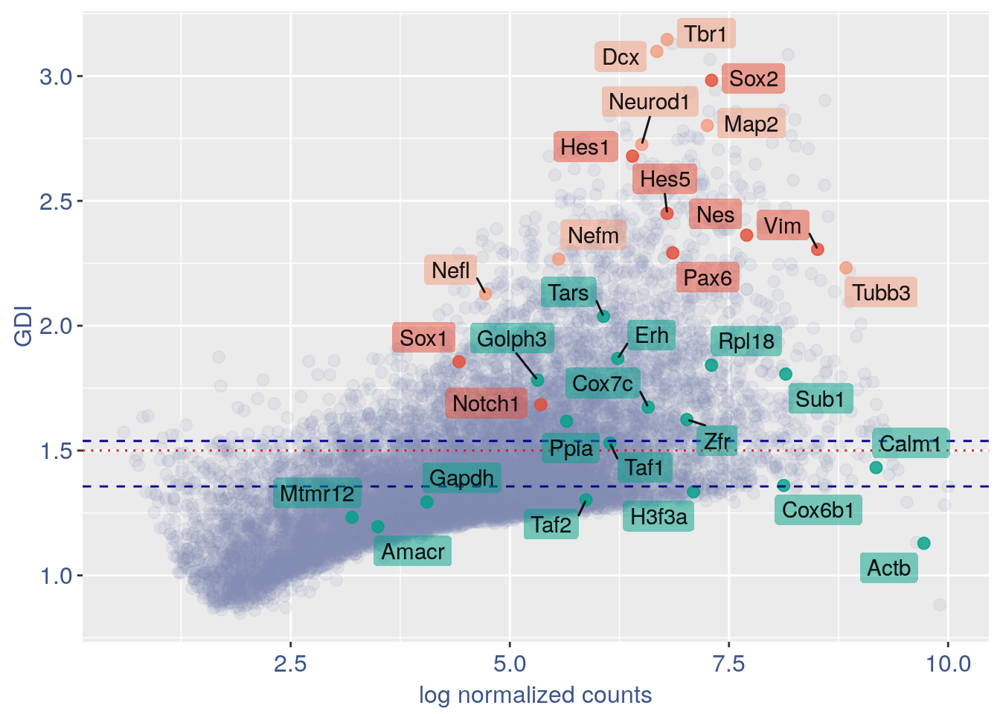
quant.p = get.GDI(obj2)
#> [1] "function to generate GDI dataframe"
#> [1] "Using S"
#> [1] "function to generate S "
head(quant.p)
#> sum.raw.norm GDI exp.cells
#> 0610007N19Rik 4.781870 1.505799 7.193230
#> 0610007P14Rik 5.771805 1.599044 19.322990
#> 0610009B22Rik 5.930450 1.337771 20.380818
#> 0610009D07Rik 7.330629 1.600228 56.064880
#> 0610009E02Rik 3.582924 1.316604 2.327221
#> 0610009L18Rik 4.107605 1.280950 3.314528In the third column of this data frame is reported the percentage of cells expressing the gene.
NPGs = c("Nes", "Vim", "Sox2", "Sox1", "Notch1",
"Hes1", "Hes5", "Pax6") #,'Hes3'
PNGs = c("Map2", "Tubb3", "Neurod1", "Nefm",
"Nefl", "Dcx", "Tbr1")
hk = c("Calm1", "Cox6b1", "Ppia", "Rpl18",
"Cox7c", "Erh", "H3f3a", "Taf1", "Taf2",
"Gapdh", "Actb", "Golph3", "Mtmr12",
"Zfr", "Sub1", "Tars", "Amacr")
text.size = 12
quant.p$highlight = with(quant.p, ifelse(rownames(quant.p) %in%
NPGs, "NPGs", ifelse(rownames(quant.p) %in%
hk, "Constitutive", ifelse(rownames(quant.p) %in%
PNGs, "PNGs", "normal"))))
textdf <- quant.p[rownames(quant.p) %in%
c(NPGs, hk, PNGs), ]
mycolours <- c(Constitutive = "#00A087FF",
NPGs = "#E64B35FF", PNGs = "#F39B7FFF",
normal = "#8491B4B2")
f1 = ggplot(subset(quant.p, highlight ==
"normal"), aes(x = sum.raw.norm, y = GDI)) +
geom_point(alpha = 0.1, color = "#8491B4B2",
size = 2.5)
GDI_plot = f1 + geom_point(data = subset(quant.p,
highlight != "normal"), aes(x = sum.raw.norm,
y = GDI, colour = highlight), size = 2.5,
alpha = 0.8) + geom_hline(yintercept = quantile(quant.p$GDI)[4],
linetype = "dashed", color = "darkblue") +
geom_hline(yintercept = quantile(quant.p$GDI)[3],
linetype = "dashed", color = "darkblue") +
geom_hline(yintercept = 1.5, linetype = "dotted",
color = "red", size = 0.5) + scale_color_manual("Status",
values = mycolours) + scale_fill_manual("Status",
values = mycolours) + xlab("log normalized counts") +
ylab("GDI") + geom_label_repel(data = textdf,
aes(x = sum.raw.norm, y = GDI, label = rownames(textdf),
fill = highlight), label.size = NA,
alpha = 0.5, direction = "both", na.rm = TRUE,
seed = 1234) + geom_label_repel(data = textdf,
aes(x = sum.raw.norm, y = GDI, label = rownames(textdf)),
label.size = NA, segment.color = "black",
segment.size = 0.5, direction = "both",
alpha = 0.8, na.rm = TRUE, fill = NA,
seed = 1234) + theme(axis.text.x = element_text(size = text.size,
angle = 0, hjust = 0.5, vjust = 0.5,
face = "plain", colour = "#3C5488FF"),
axis.text.y = element_text(size = text.size,
angle = 0, hjust = 0, vjust = 0.5,
face = "plain", colour = "#3C5488FF"),
axis.title.x = element_text(size = text.size,
angle = 0, hjust = 0.5, vjust = 0,
face = "plain", colour = "#3C5488FF"),
axis.title.y = element_text(size = text.size,
angle = 90, hjust = 0.5, vjust = 0.5,
face = "plain", colour = "#3C5488FF"),
legend.title = element_blank(), legend.text = element_text(color = "#3C5488FF",
face = "italic"), legend.position = "bottom") # titl)
legend <- cowplot::get_legend(GDI_plot)
GDI_plot = GDI_plot + theme(legend.position = "none")
GDI_plot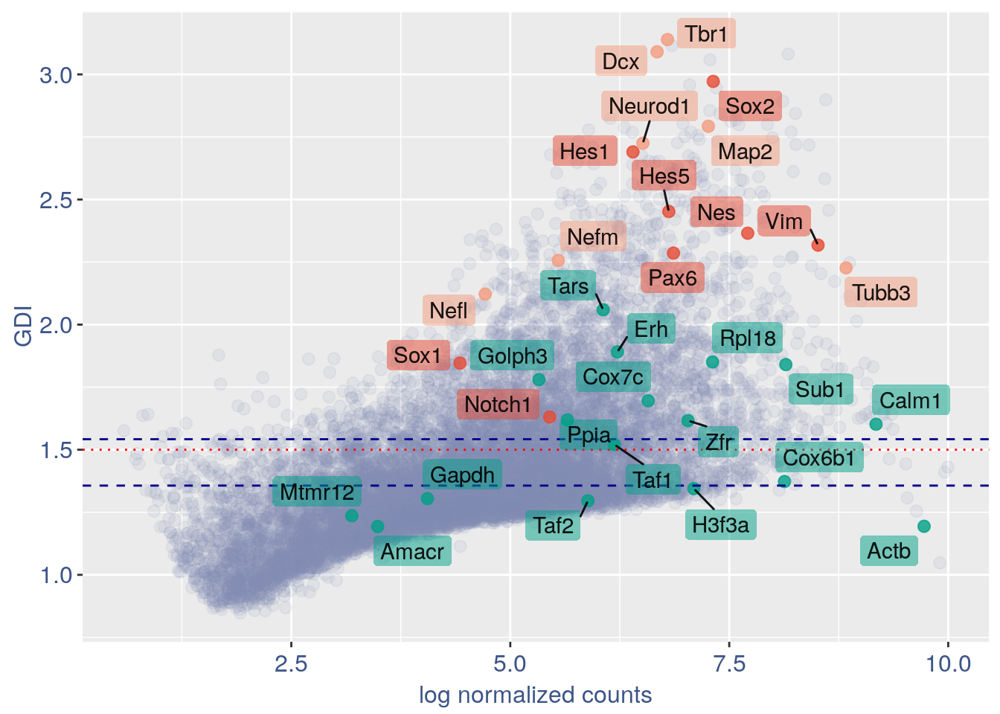
For the Gene Pair Analysis, we can plot an heatmap with the coex values between two genes sets. To do so we need to define, in a list, the different gene sets (list.genes). Then in the function parameter sets we can decide which sets need to be considered (in the example from 1 to 3). In the condition parameter we should insert an array with each file name prefix to be considered (in the example, the file names is “E11_cortex_clean”).
list.genes = list(Ref.col = PNGs, NPGs = NPGs,
Const. = hk)
plot_heatmap(df_genes = list.genes, sets = c(1:3),
conditions = "E11_cortex_clean", dir = "Data/")
#> [1] "plot heatmap"
#> [1] "Loading condition E11_cortex_clean"
#> [1] "Map2" "Tubb3" "Neurod1" "Nefm" "Nefl" "Dcx" "Tbr1"
#> [1] "Get p-values on a set of genes on columns on a set of genes on rows"
#> [1] "Using function S"
#> [1] "function to generate S "
#> [1] "Ref.col"
#> [1] "NPGs"
#> [1] "Const."
#> [1] "min coex: -0.0104931136392143 max coex 0.0140062494584321"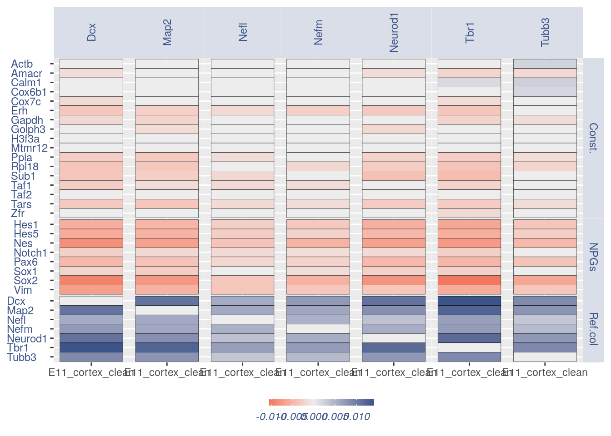 ## Heatmaps without cleaning
list.genes = list(Ref.col = PNGs, NPGs = NPGs,
Const. = hk)
plot_heatmap(df_genes = list.genes, sets = c(1:3),
conditions = "E11_cortex", dir = "Data/")
#> [1] "plot heatmap"
#> [1] "Loading condition E11_cortex"
#> [1] "Map2" "Tubb3" "Neurod1" "Nefm" "Nefl" "Dcx" "Tbr1"
#> [1] "Get p-values on a set of genes on columns on a set of genes on rows"
#> [1] "Using function S"
#> [1] "function to generate S "
#> [1] "Ref.col"
#> [1] "NPGs"
#> [1] "Const."
#> [1] "min coex: -0.0103430479944429 max coex 0.0138606324053371"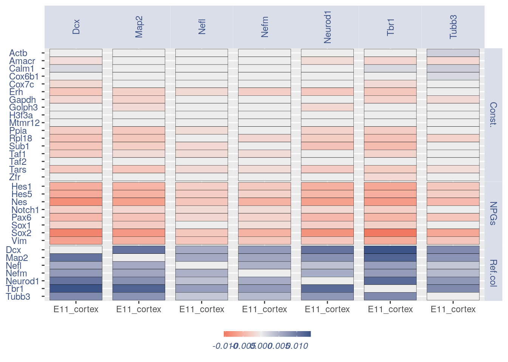
print(sessionInfo())
#> R version 4.0.4 (2021-02-15)
#> Platform: x86_64-pc-linux-gnu (64-bit)
#> Running under: Ubuntu 18.04.5 LTS
#>
#> Matrix products: default
#> BLAS: /usr/lib/x86_64-linux-gnu/openblas/libblas.so.3
#> LAPACK: /usr/lib/x86_64-linux-gnu/libopenblasp-r0.2.20.so
#>
#> locale:
#> [1] LC_CTYPE=en_US.UTF-8 LC_NUMERIC=C
#> [3] LC_TIME=en_US.UTF-8 LC_COLLATE=en_US.UTF-8
#> [5] LC_MONETARY=en_US.UTF-8 LC_MESSAGES=en_US.UTF-8
#> [7] LC_PAPER=en_US.UTF-8 LC_NAME=C
#> [9] LC_ADDRESS=C LC_TELEPHONE=C
#> [11] LC_MEASUREMENT=en_US.UTF-8 LC_IDENTIFICATION=C
#>
#> attached base packages:
#> [1] stats graphics grDevices utils datasets methods base
#>
#> other attached packages:
#> [1] ggrepel_0.9.1 ggplot2_3.3.3 Matrix_1.3-2 data.table_1.14.0
#> [5] COTAN_0.1.0
#>
#> loaded via a namespace (and not attached):
#> [1] sass_0.3.1 tidyr_1.1.2 jsonlite_1.7.2
#> [4] R.utils_2.10.1 bslib_0.2.4 assertthat_0.2.1
#> [7] highr_0.8 stats4_4.0.4 yaml_2.2.1
#> [10] pillar_1.5.1 lattice_0.20-41 glue_1.4.2
#> [13] reticulate_1.18 digest_0.6.27 RColorBrewer_1.1-2
#> [16] colorspace_2.0-0 cowplot_1.1.1 htmltools_0.5.1.1
#> [19] R.oo_1.24.0 pkgconfig_2.0.3 GetoptLong_1.0.5
#> [22] purrr_0.3.4 scales_1.1.1 tibble_3.1.0
#> [25] generics_0.1.0 farver_2.1.0 IRanges_2.24.1
#> [28] ellipsis_0.3.1 withr_2.4.1 BiocGenerics_0.36.0
#> [31] magrittr_2.0.1 crayon_1.4.0 evaluate_0.14
#> [34] R.methodsS3_1.8.1 fansi_0.4.2 Cairo_1.5-12.2
#> [37] tools_4.0.4 GlobalOptions_0.1.2 formatR_1.8
#> [40] lifecycle_1.0.0 matrixStats_0.58.0 ComplexHeatmap_2.6.2
#> [43] basilisk.utils_1.2.2 stringr_1.4.0 S4Vectors_0.28.1
#> [46] munsell_0.5.0 cluster_2.1.1 compiler_4.0.4
#> [49] jquerylib_0.1.3 rlang_0.4.10 grid_4.0.4
#> [52] rjson_0.2.20 rappdirs_0.3.3 circlize_0.4.12
#> [55] labeling_0.4.2 rmarkdown_2.7 basilisk_1.2.1
#> [58] gtable_0.3.0 DBI_1.1.1 R6_2.5.0
#> [61] knitr_1.31 dplyr_1.0.4 utf8_1.2.1
#> [64] clue_0.3-58 filelock_1.0.2 shape_1.4.5
#> [67] stringi_1.5.3 parallel_4.0.4 Rcpp_1.0.6
#> [70] vctrs_0.3.6 png_0.1-7 tidyselect_1.1.0
#> [73] xfun_0.22